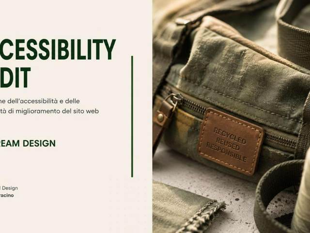
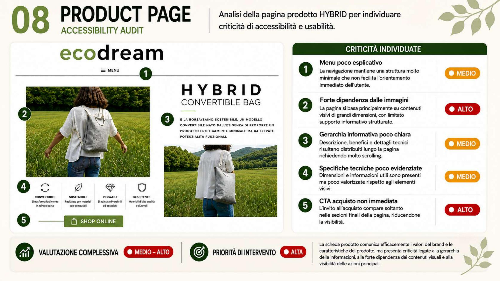

Il progetto
Dopo lo studio sugli scenari d'uso, in questo esercizio ho condotto un audit di accessibilità puntuale su una pagina reale del sito Ecodream Design: la scheda prodotto della borsa "Hybrid Convertible Bag".
Per ogni criticità individuata ho assegnato un livello di priorità (medio o alto), distinguendo problemi di navigazione, eccessiva dipendenza dai contenuti visivi, gerarchia informativa poco chiara e specifiche tecniche poco valorizzate.
L'audit si chiude con una valutazione complessiva della pagina e un'indicazione di priorità d'intervento, utile per pianificare gli step successivi di redesign in modo mirato invece che generico.

Uno sguardo al dettaglio
Audit della scheda prodotto "Hybrid Convertible Bag": cinque criticità individuate e classificate per priorità, dalla forte dipendenza dalle immagini alla CTA di acquisto poco visibile.